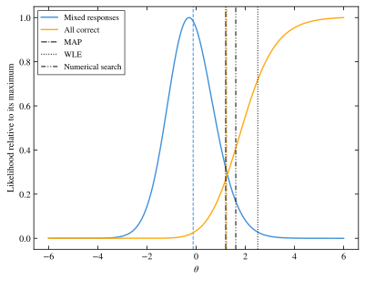

Estimation Techniques#
Ability estimation techniques compute the examinee’s ability estimate \(\hat{\theta}\) after each response. The choice of estimator affects accuracy, bias, and the availability of uncertainty quantification.
Every estimator returns a Estimate: the estimate,
its standard error by the estimator’s own formula, which the precision stoppers
judge, and the number of objective evaluations it took. The session records one
per step.
Estimator |
Standard error |
|---|---|
\(1/\sqrt{I(\hat\theta)}\), the Fisher standard error [Magis and Raîche, 2012, Eq. 3, p. 4] |
|
the posterior standard deviation [Magis and Raîche, 2012, Eq. 11, p. 6] |
|
\(1/\sqrt{I(\hat\theta) - (\log p)''(\hat\theta)}\), where \(\log p\) is the prior’s log-density; \(1/\sqrt{I(\hat\theta) + 1/\sigma^2}\) for a normal prior of variance \(\sigma^2\) [Magis and Raîche, 2012, Eq. 6, p. 5] |
|
\(1/\sqrt{I(\hat\theta)}\), the Fisher standard error at the estimate |
The two Bayesian standard errors are usually below the Fisher one at the same estimate, and with a normal prior MAP’s always is, so a precision stopper ends their tests sooner than the Fisher standard error would. On 200 simulated EAP sessions, the Fisher standard error at the estimate was a median 26% above the posterior standard deviation after 3 items and 4% above after 20, and with a 0.4 threshold the stopping decision after 20 items differed in 47 sessions.
Ability scale and constant responses#
Once an item has been administered, every estimator returns a finite estimate
inside its range, whatever the responses
(ADR-0018). The range is
bounds for the estimators that search the scale, and the quadrature grid for
EAP; both span \([-6, 6]\) by default, six standard deviations either side of the
mean of a standard normal population. Narrower bounds restrict mixed responses
too: where the likelihood’s maximum, or the posterior’s mode, lies beyond a
bound, the estimate is that bound.
After all-correct or all-incorrect responses the maximum likelihood estimate is infinite, and each estimator handles them its own way:
NumericalSearchEstimatortakes Dodd’s step from the current estimate toward the bank’s hardest or easiest item;EAPEstimatorandMAPEstimatorreturn the posterior mean and mode, which the prior draws toward its center; withirtlib.quadrature.uniform_log_prior, the MAP estimate is the bound the responses point to, the maximum likelihood estimate within the bounds;WarmLikelihoodEstimatorreturns the root of Warm’s modified score, which is finite for these responses, or the bound it points to.
The figure draws the likelihood of five responses to the same five items. Mixed responses peak inside the scale, and their EAP estimate lies near the peak. Five correct responses rise to the edge of the scale, with no peak, yet every estimator puts that examinee at a finite ability.

Fig. 9 The likelihood of two patterns of five responses, relative to its maximum. The dashed line in each curve’s colour marks its EAP estimate; the black lines mark the other estimators’ estimates after the five correct responses.#
Implemented#
Class Hierarchy#
classDiagram
BaseEstimator <|-- EAPEstimator
BaseEstimator <|-- MAPEstimator
BaseEstimator <|-- NumericalSearchEstimator
BaseEstimator <|-- WarmLikelihoodEstimator
References#
D. Magis and G. Raîche. Random generation of response patterns under computerized adaptive testing with the R package catR. Journal of Statistical Software, 48(8):1–31, 2012. Open access. doi:10.18637/jss.v048.i08.
Base Class#
- class catsim.estimation.BaseEstimator[source]#
Base class for ability estimators.
An estimator updates the ability estimate from the responses a
StepContextholds, the newest one included, and reports it as anEstimate: the estimate, its standard error by the estimator’s own formula, which the stoppers judge, and how many objective evaluations it took.An estimator holds its configuration and caches derived from the item bank, never per-session state: one estimator serves every session of a run, which an application may interleave, and look-ahead selectors such as MEI call it with hypothetical responses. The Extending catsim guide lists what an estimator receives and returns.
- abstractmethod estimate(context: StepContext) Estimate[source]#
Return the updated ability estimate given the responses so far, with its standard error.
Once an item has been administered, the estimate is finite and lies within the estimator’s bounds, whatever the responses, all correct and all incorrect included.
- Parameters:
- contextStepContext
The session to estimate for, with the newest item and response, and with
thetathe estimate before them. WhenCatEngine.answercalls the estimator, the context’s generator is the one made from thernggiven toanswer.
- Returns:
- Estimate
The updated ability estimate \(\hat\theta\), its standard error (positive, possibly
math.inf) and the number of objective evaluations it took.